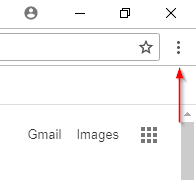
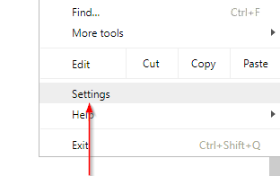
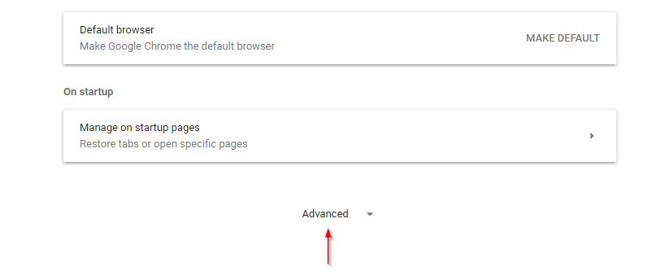
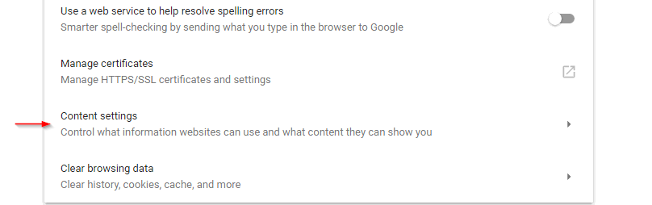
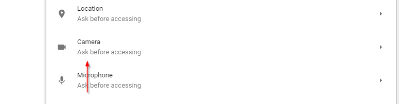
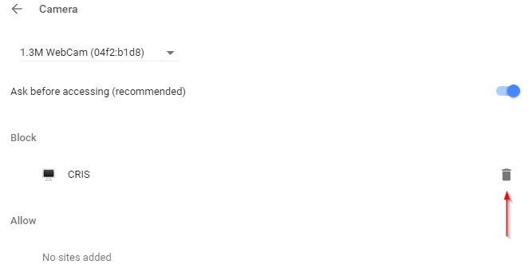

- Select the customise dots on the top right of the Chrome browser.

- Select 'Settings' in the drop down menu.

- Scroll down the page that opens, and select 'Advanced'

- Select 'Content settings' under 'Privacy and security'

- Select 'Camera' and 'Microphone' to determine if the Chrome extension has been blocked.

- Select the trashcan icon next to 'CRIS'.

When the proctoring page opens on the test again, it will now ask if you wish to allow access. Remember to select
'Allow'.